Server status of rpc1.org
Weekly
Hourly
Daily
Weekly
Monthly
Quarterly
Yearly
All
Back to main page
[System Uptime]
[Number of Gigabytes transfered (since last reset)]
[CPU Usage]
[Load Average (Processes) & number of CPUs]
[Processes & TCP connections]
[Physical Memory & Swap usage]
[Disk Space]
[System Voltages and Fans]
[System Temperatures]
[Context switches & Interrupts rate]
[New Process Spawn Rate]
[Page ins & outs rate]
[Swap ins & outs rate]
[eth0 Interface I/O Bytes]
[lo Interface I/O Bytes]
[eth0 Interface I/O Packets]
[lo Interface I/O Packets]
[eth0 Interface Errors]
[IP statistics]
[TCP statistics]
[ICMP statistics]
[UDP statistics]
[System Wide Disk Reads/Writes Per Second]
[System Wide Disk Transfer Rate]
[/dev/sda Disk Reads/Writes Per Second]
[/dev/sdb Disk Reads/Writes Per Second]
[/dev/md0 Disk Reads/Writes Per Second]
[/dev/md1 Disk Reads/Writes Per Second]
[/dev/sda Disk Transfer Rate]
[/dev/sdb Disk Transfer Rate]
Weekly System Uptime
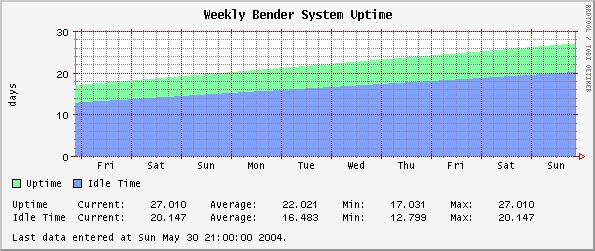
Weekly Number of Gigabytes transfered (since last interface reset)
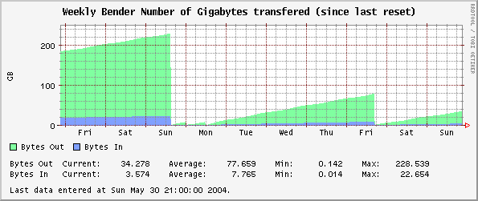
Weekly CPU Usage
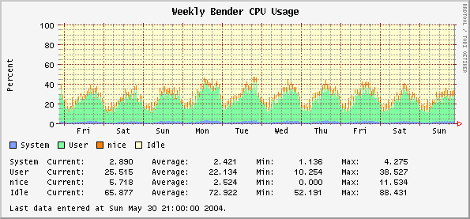
Weekly Load Average (Processes) & number of CPUs
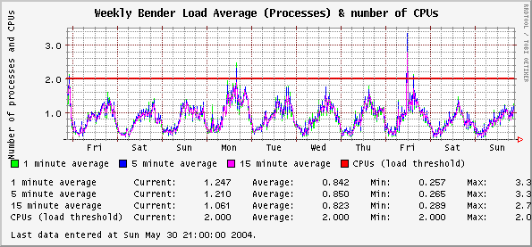
Weekly Processes & TCP connections
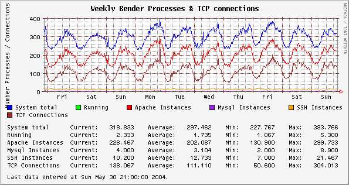
Weekly Physical Memory & Swap usage
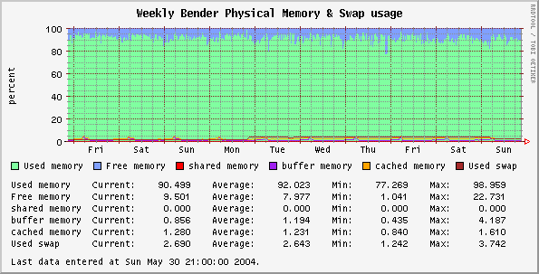
Weekly Disk Space
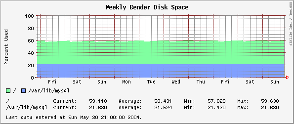
Weekly System Voltages and Fans
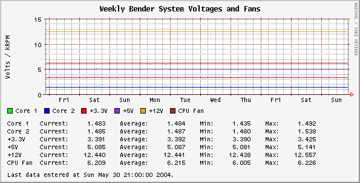
Weekly System Temperatures
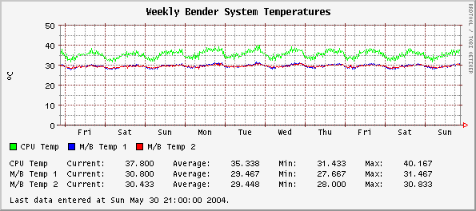
Weekly Context switches & Interrupts rate
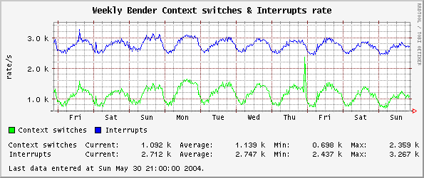
Weekly New Process Spawn Rate
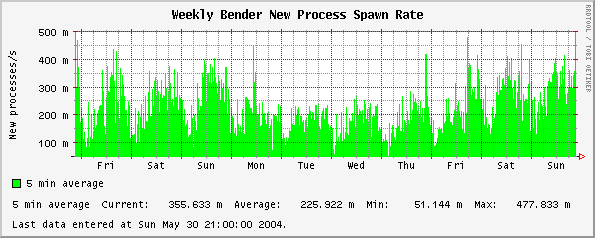
Weekly Page ins & outs rate
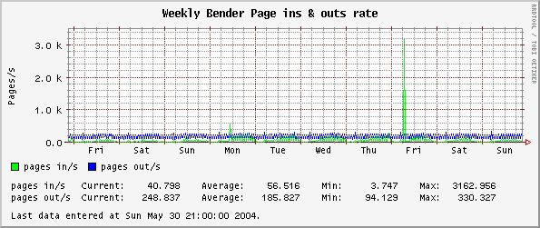
Weekly Swap ins & outs rate
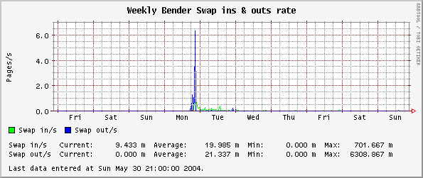
Weekly eth0 Interface I/O Bytes
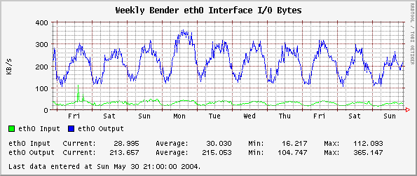
Weekly lo Interface I/O Bytes
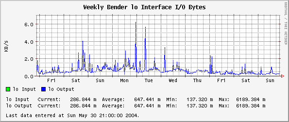
Weekly eth0 Interface I/O Packets
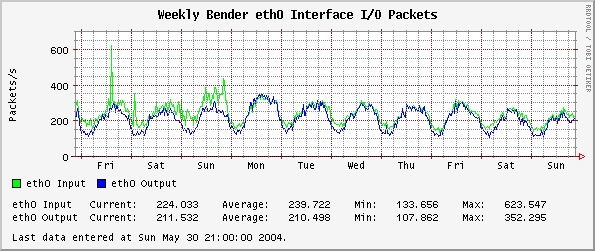
Weekly lo Interface I/O Packets
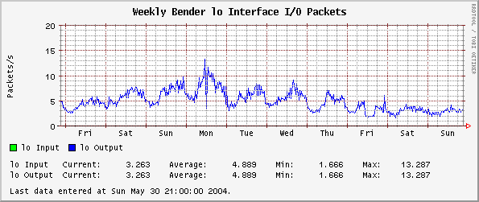
Weekly eth0 Interface Errors
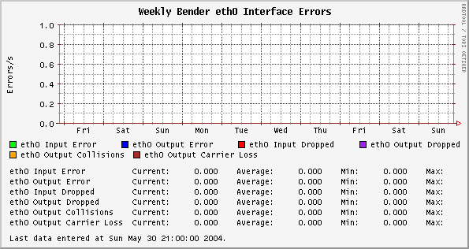
Weekly IP statistics
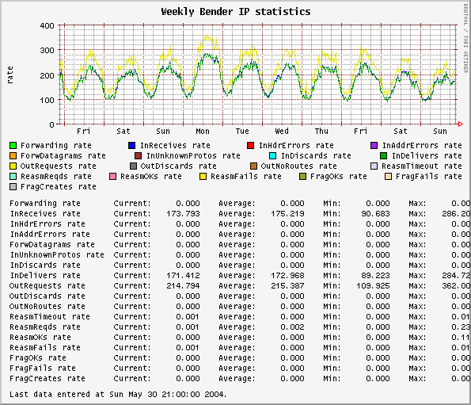
Weekly TCP statistics
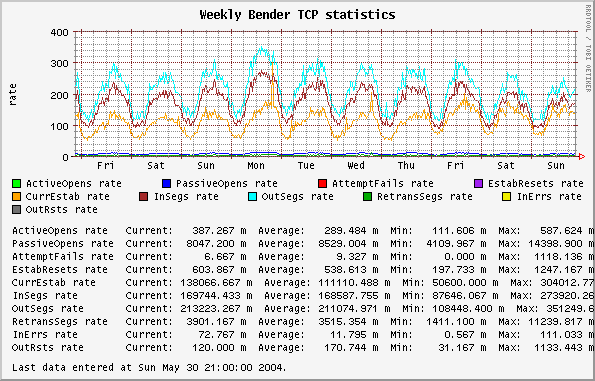
Weekly ICMP statistics
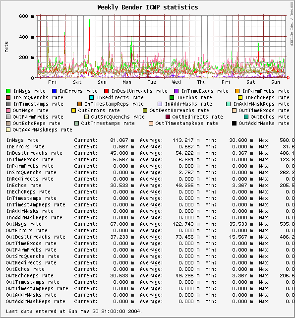
Weekly UDP statistics
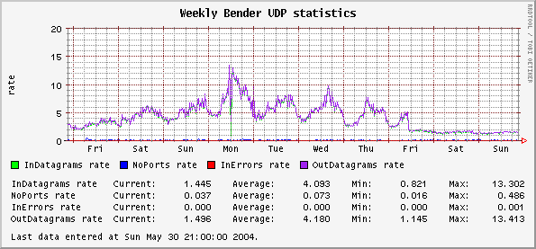
Weekly System Wide Disk Reads/Writes Per Second
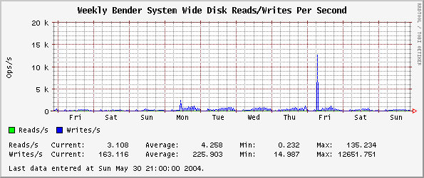
Weekly System Wide Disk Transfer Rate
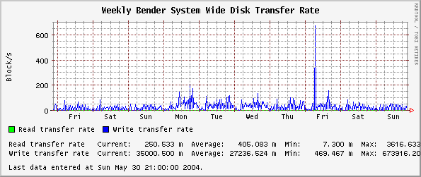
Weekly /dev/sda Disk Reads/Writes Per Second
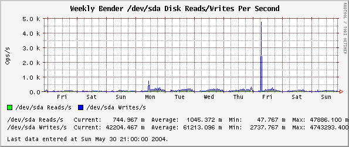
Weekly /dev/sdb Disk Reads/Writes Per Second
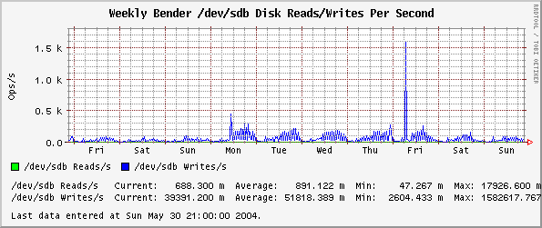
Weekly /dev/md0 Disk Reads/Writes Per Second
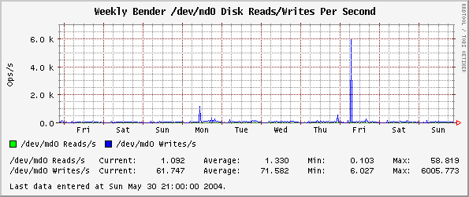
Weekly /dev/md1 Disk Reads/Writes Per Second
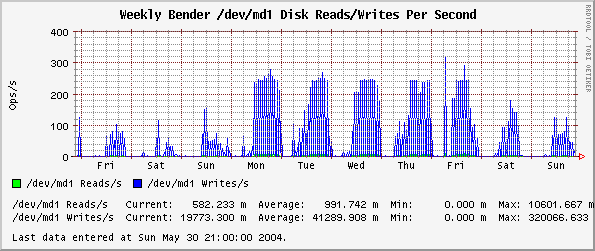
Weekly /dev/sda Disk Transfer Rate
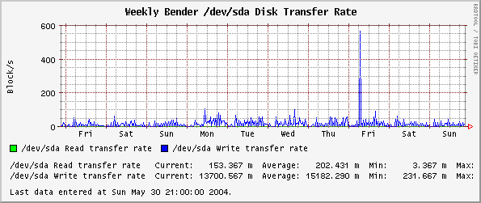
Weekly /dev/sdb Disk Transfer Rate
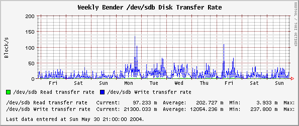
"Bite my shiny metal ass!!!"
Orca
0.27 by
Blair Zajac
blair@orcaware.com
Funding for Orca provided by renowned fashion
image consultant
,
Ashley Rothschild
.
Graphs made available by RRDtool.